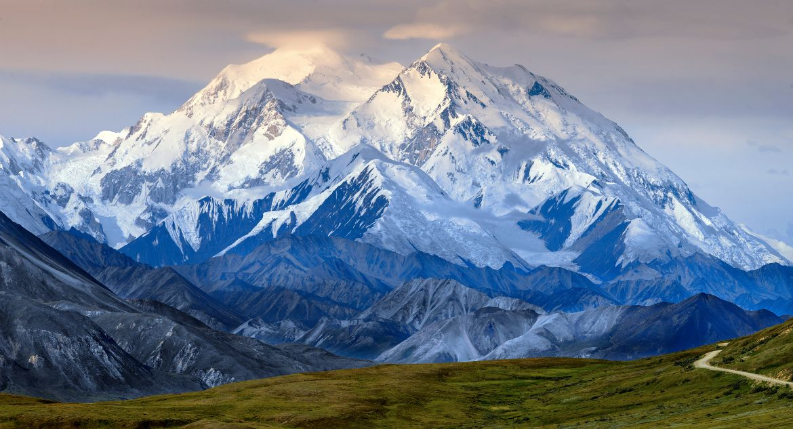
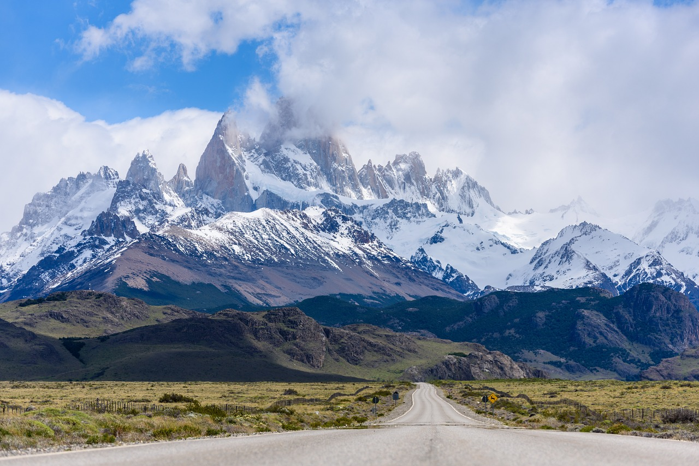

Denali
Mais visitadoLocalizada no Alasca.

Cordilheira dos Andes
Mais visitadoPor que Cordilheira dos Andes?
Mont Blanc
Mais visitadoEntre França e Itália
Por serem os mais famosos, pode ser do seu interesse!

Localizada no Alasca.

Por que Cordilheira dos Andes?
Entre França e Itália

A Cordilheira dos Andes é a maior cadeia de montanhas do mundo em extensão, com cerca de 7.000 quilômetros de comprimento ao longo da costa oeste da América do Sul.
Escolha sua próxima aventura.